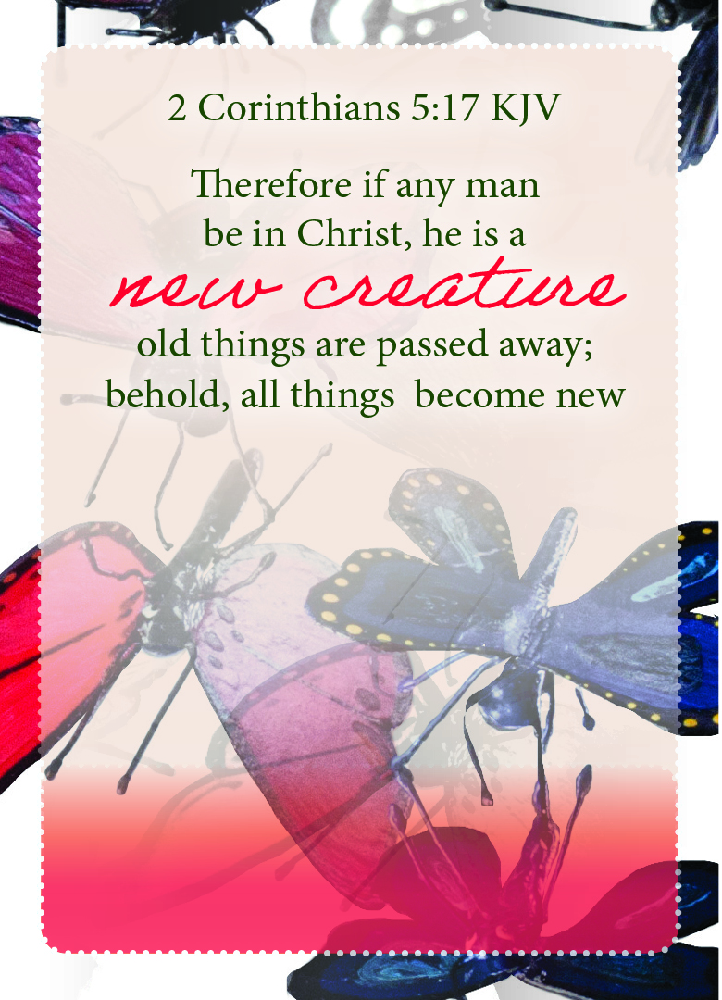

2nd Corinthians 5:17 KJV
,

Pray the Scripture
Father God, thank You for giving me Your precious Son Jesus. Thank You for loving me so much that You choose to
give me Your heart when I didn't
deserve Him. Remind me that Jesus is the filament of Your very nature, He is truly a reflection of Your unending
love for me. Lord help me to stop & pause to reflect back on that day when love came down to be a baby born to die
for my sins. Thank You Lord You washed my dirty rags clean by the blood of Jesus that I can now come as I am and
sit at the table with You to taste & see You are good. Remind me the very breaths I take are a reflection of Your
grace upon my life. Teach me to live righteously and in complete alignment with Your Word. Thank You for saving a
retch like me & making me new.
In The Name of Jesus Amen
Next Card
Back To Prayer Card List